Los átomos, al igual que todos los elementos de la naturaleza, tienden a organizarse para buscar la máxima estabilidad energética. Esta se obtiene en la mayoría de los casos cuando el átomo completa su última capa (capa de valencia) con ocho electrones al perder, ganar o compartir electrones. Esta regularidad se denomina regla del octeto.
-
01
La regla del octeto
Open or Close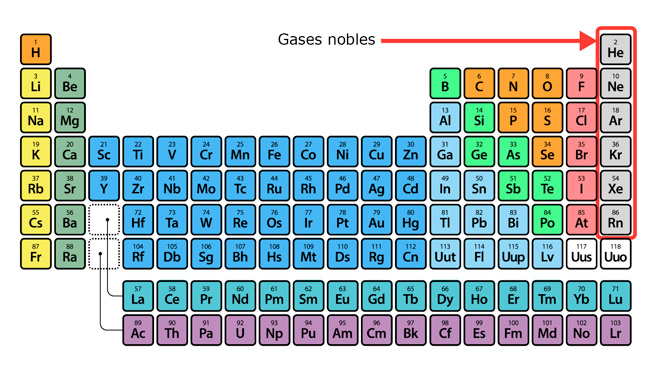Los gases nobles, excepto el helio, debido a su estructura estable de ocho electrones, sirvieron como fuente de inspiración en 1956 a Walther Kossel y Gilbert N. Lewis para proponer la regla del octeto como criterio de explicación de la formación de enlaces.
Excepciones a la regla del octeto
Los elementos del primer período, como el hidrógeno y el helio, solo necesitan dos electrones para satisfacer la capa de valencia. Algunos no metales, como el fósforo, forman compuestos estables, en los que en su nivel más externo tienen más de ocho electrones, y por ello se dice que presentan octeto expandido.
Recuerda
La regla del octeto indica que los átomos se enlazan para completar con ocho electrones la capa de valencia, lo cual les permite mayor estabilidad.
01.1Consolidación
Actividades para consolidar lo que has aprendido en esta sección.
-
02
Las estructuras de Lewis
Open or ClosePara representar los electrones externos de los átomos y los enlaces que estos generan en búsqueda de la estabilidad energética, Lewis estableció fórmulas o estructuras electrónicas a partir de puntos, cruces o círculos ubicados alrededor de los elementos. Las estructuras propuestas por Lewis también son llamadas estructuras del punto-electrón. Para ello, es necesario conocer sus configuraciones electrónicas a fin de identificar los electrones del último nivel.
Para dibujar un esquema de Lewis se procede de la siguiente manera:
- Se elige el átomo del compuesto que presenta mayor número de electrones en su último nivel de energía y se coloca en el centro. A su alrededor se dibujan los electrones con cruces o puntos, agrupados por pares.
- Se repite el procedimiento con el resto de los átomos, situándolos alrededor del primero.
Esquema de Lewis del amoniaco. El átomo de nitrógeno tiene cinco electrones en el último nivel, comparte tres con cada uno de los átomos de hidrógeno (pares enlazantes) y le queda un par libre (no enlazante).
¿Enlazantes o libres?
Cada par de electrones (uno de cada átomo) que forma un enlace se llama par enlazante. Los pares de electrones que quedan libres se conocen como pares no enlazantes o pares libres.
Recuerda
Los electrones que se encuentran en la capa de valencia son los que intervienen en un enlace. Si la capa está llena con ocho electrones, no hay posibilidad de unión.
Profundiza
02.1Consolidación
Actividades para consolidar lo que has aprendido en esta sección.
-
03
El enlace químico
Open or CloseSe considera enlace químico a la unión que se establece entre distintos átomos, debido a las fuerzas de atracción que hay entre estos.
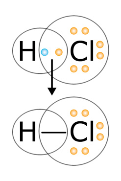Un enlace se representa gráficamente a través de una línea entre los elementos enlazados. Cada línea representa dos electrones compartidos.
Para explicar las relaciones que se generan entre los átomos cuando forman enlaces y el origen de los mismos, la teoría del enlace químico propuso tres modelos: el iónico, el covalente y el metálico.
Modelos de enlace químico
Los modelos de enlaces iónico, covalente y metálico son representaciones del enlace entre los átomos, teniendo en cuenta la diferencia de electronegatividad y la tendencia a formar el octeto.
Profundiza
03.1El enlace con carácter iónico
Este tipo de enlace se produce por transferencia de electrones de un átomo a otro, de manera que las configuraciones electrónicas resultantes son más estables que las iniciales. El átomo que cede electrones se transforma en un catión y el que los gana en un anión. Los iones de cargas eléctricas opuestas se mantienen unidos por fuerzas de atracción electrostática. Las sustancias iónicas no forman verdaderas moléculas, sino agregados de iones que se ordenan en el espacio formando redes cristalinas.
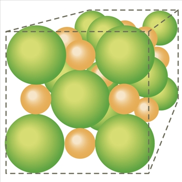Esquema de la red cristalina de un compuesto iónico. Las esferas verdes representan los aniones y las de color naranja los cationes.
El enlace iónico se da entre elementos ubicados en los extremos opuestos de la tabla periódica, por ejemplo, entre los metales de los grupos 1 y 2, y los no metales de los grupos 16 y 17. La diferencia de electronegatividad entre dos átomos que forman un enlace iónico suele ser mayor o igual a 1,7.
Son ejemplos de sustancias con enlace iónico el bromuro de zinc (ZnBr2) y el sulfuro de cobre (II) (CuS) y, en general, las sales binarias, formadas por un metal y un no metal.
Recuerda
La electronegatividad mide la tendencia de un elemento a atraer electrones del enlace cuando se combina con otro. Cuanto mayor es la electronegatividad, mayor será también su capacidad para atraerlos. En la tabla periódica, la electronegatividad aumenta de izquierda a derecha a lo largo de los períodos y de abajo hacia arriba dentro de cada grupo.
03.2El enlace con carácter covalente
Se forma un enlace covalente cuando dos átomos comparten uno o más pares de electrones, de modo que el par compartido se localiza entre ambos y los dos adquieren una configuración electrónica más estable. Por ejemplo, dos átomos de cloro comparten un electrón de su último nivel para formar una molécula de cloro, así logran tener ocho electrones cada uno (7 propios y 1 compartido). Dos átomos pueden compartir dos, cuatro o seis electrones, lo que da lugar a un enlace covalente simple, doble o triple, respectivamente.
El enlace covalente se produce entre elementos de electronegatividad similar y, en general, cuando la diferencia es menor que 1,7. Este tipo de enlace es más frecuente entre dos no metales, por ejemplo, entre el oxígeno y un no metal, como el azufre o el nitrógeno.
Cuando la diferencia de electronegatividad es cercana a 1,7, los electrones compartidos se localizan cerca del átomo más electronegativo, lo que da origen a un enlace covalente polar. Por ejemplo, las uniones entre el átomo de oxígeno y cada átomo de hidrógeno en la molécula de agua son de este tipo, ya que el oxígeno es más electronegativo y los pares enlazantes se hallan más próximos a él.
El enlace covalente apolar sucede cuando la diferencia de electronegatividades es cercana o igual a cero, por ejemplo, esto ocurre en el enlace entre los dos átomos de oxígeno (O2).
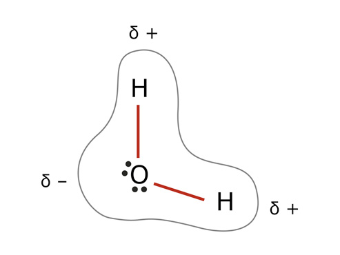Distribución geométrica de la carga eléctrica en la molécula de agua. La diferencia de electronegatividad entre el oxígeno y el hidrógeno hace que los pares de electrones de los enlaces estén más cerca del átomo de oxígeno. La molécula presenta una densidad de carga negativa en la zona del oxígeno y positiva en la del hidrógeno.
03.3El enlace metálico
Los átomos de los metales tienen pocos electrones en su último nivel de energía y, por ello, escasa tendencia a atraer otros. Para cumplir la regla del octeto, comparten los electrones entre muchos átomos, de modo que estos forman una nube alrededor de los núcleos. Los electrones no pertenecen a ningún átomo en particular y tienen una gran movilidad, mientras que los núcleos se acomodan formando una red tridimensional compacta, conocida como enlace metálico. Este tipo de enlace ocurre en materiales como el cobre o el hierro.
Recuerda
Si la diferencia de electronegatividades entre dos átomos es igual o mayor a 1,7, se considera que el enlace es de carácter iónico, de lo contrario, es covalente.
03.4Consolidación
Actividades para consolidar lo que has aprendido en esta sección.
-
04
Las fuerzas intermoleculares
Open or CloseLas fuerzas intermoleculares son interacciones electrostáticas (atracciones y repulsiones entre cargas eléctricas) que se producen entre las moléculas o iones. En las moléculas neutras actúan las fuerzas de Van der Waals, entre ellas: las fuerzas dipolo-dipolo, las fuerzas de dispersión de London y los puentes de hidrógeno. Entre las moléculas y los iones se presentan las fuerzas ion-dipolo.
Las fuerzas intermoleculares son mucho más débiles que las intramoleculares y son las interacciones que hay que vencer para producir un cambio físico en las sustancias. Influyen, por ejemplo, en propiedades físicas como el estado de agregación, el punto de fusión y de ebullición, la solubilidad, etc.
Fuerzas intramoleculares
Las fuerzas intramoleculares, a las que llamamos enlaces químicos, son las que se producen en el interior de una molécula, donde los átomos se unen mediante enlaces de tipo iónico, covalente o metálico. Estas son las interacciones que se deben vencer para que se produzca un cambio químico.
Profundiza
04.1Las fuerzas dipolo-dipolo
Las fuerzas dipolo-dipolo se presentan entre las moléculas poliatómicas que tienen momentos dipolares, por ejemplo, entre el NH3 y el NF3. En la primera el desplazamiento electrónico es hacia el nitrógeno, pues este es más electronegativo que el hidrógeno, y en la segunda se da hacia el flúor, debido a su tendencia electronegativa. A partir de los dipolos se establece una atracción entre el N de la molécula NH3 (parcialmente negativo) y el N de la molécula NF3 (parcialmente positivo).
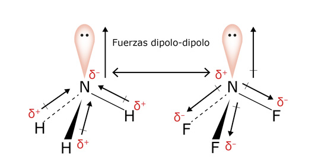La imagen representa los dipolos y las atracciones electrostáticas entre las moléculas de NH3 y NF3.
Polaridad de las moléculas
Una molécula polar es eléctricamente neutra, pero sus cargas presentan una distribución asimétrica, de modo que tiene un extremo con carga parcial negativa y otro con carga parcial positiva. Esto se debe a la presencia de enlaces covalentes polares entre los átomos que la componen.
La polaridad de una molécula también depende de su estructura geométrica, y puede ocurrir que no resulte polar, aunque los enlaces entre sus átomos sí lo sean. Esto se debe a que la molécula es simétrica y la distribución de las cargas se compensa, como ocurre en el dióxido de carbono.
Al aumentar el número de dipolos, las moléculas mejoran la disposición geométrica, lo que incrementa la fuerza ejercida y la atracción entre estas.
04.2Las fuerzas de dispersión de London
En una molécula no polar puede darse puntualmente una deformación de la nube electrónica y formarse un dipolo instantáneo. Este dipolo puede inducir otro dipolo en una molécula que esté próxima y generar un dipolo inducido, con lo que se establece entre estos dos dipolos una fuerza de atracción débil. Esto sucede, por ejemplo, entre los átomos de los gases nobles.
Estas fuerzas se denominan también fuerzas de dispersión de London, ya que fue el físico estadounidense Fritz London, en 1930, el primero que ofreció una explicación de los dipolos instantáneos.
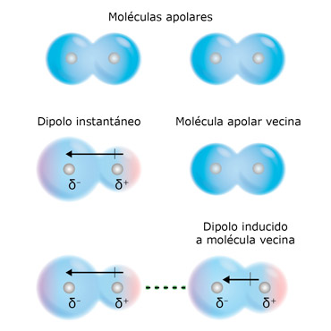Representación del dipolo instantáneo en una molécula apolar por la distribución desigual de los electrones y la posterior inducción del dipolo a una molécula vecina.
04.3Los puentes de hidrógeno
Se llama puentes de hidrógeno a un tipo especial de unión generado por la atracción intermolecular que se produce entre un átomo de hidrógeno y un par de electrones libres de otro átomo, como el oxígeno, flúor y nitrógeno.
Uno de los ejemplos más conocidos es el de las moléculas de agua, en las que los enlaces de hidrógeno se producen entre los pares electrónicos libres del oxígeno de una molécula y el hidrógeno de otra molécula vecina.
Muchas de las propiedades físicas del agua se deben a la existencia de los enlaces de hidrógeno entre sus moléculas. Cada molécula de agua puede formar 4 enlaces de hidrógeno con sus vecinas. Para que el agua líquida pase a vapor, es necesario vencer estas fuerzas intermoleculares, lo que explica su elevado punto de ebullición.
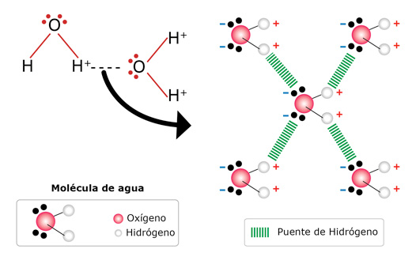La polaridad de la molécula de agua determina la existencia de fuerzas intermoleculares que, en los estados líquido y sólido, se traducen en la aparición de enlaces débiles, denominados enlaces por puente de hidrógeno, entre pares de electrones libres del oxígeno de una molécula y el hidrógeno de otra.
04.4Las fuerzas ion-dipolo
Cuando hay atracción entre un ion (catión o anión) y una molécula polar, se dice que están actuando las fuerzas ion-dipolo. La incidencia de las interacciones entre estas entidades químicas depende de la carga y del tamaño del ion, de los dipolos y del tamaño de la molécula. No obstante, se puede decir que los cationes experimentan mayor intensidad en la interacción con los dipolos que los aniones, debido a la concentración de la carga.
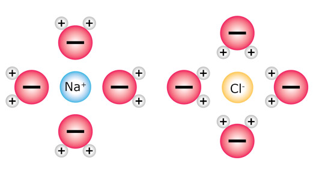Un ejemplo de fuerzas ion-dipolo ocurre en la disolución de sal de cocina (NaCl) en agua, donde el catión sodio Na+ y el anión cloruro Cl- se rodean por las moléculas de agua, las cuales presentan dipolo.
04.5Consolidación
Actividades para consolidar lo que has aprendido en esta sección.
-
05
La geometría molecular
Open or CloseLa disposición espacial que adoptan los átomos en una molécula se describe por la geometría molecular, que incide en gran medida en el comportamiento y en las propiedades físicas y químicas de las sustancias.
Las distancias y ángulos entre átomos se deben determinar de forma experimental, aunque es posible predecirlos conociendo el número de electrones que rodean al átomo central a través de las estructuras de Lewis y usando el modelo de repulsión de pares electrónicos de la capa de valencia (RPECV).
05.1El modelo RPECV
El modelo de repulsión de pares electrónicos de la capa de valencia (RPECV) asume que los pares de electrones de la capa externa se repelen de tal forma que se mantienen lo más alejados posible unos de otros, similar al efecto que ocurre cuando se acercan dos imanes por el mismo polo, donde las líneas de campo magnéticas se comprimen hasta el punto máximo en el cual se expanden, lo que impide el contacto entre los imanes. Por ende, la disposición y forma que toman las moléculas dependerá del número de pares electrónicos, los cuales se acomodan de manera que experimenten la mínima repulsión posible.
Para aplicar el modelo RPECV se debe tener en cuenta que:
- En los dobles y triples enlaces, cada uno se toma como un par electrónico.
- Si una misma molécula tiene dos o más estructuras de resonancia, a cualquiera de ellas se le aplica.
Estructuras de resonancia
Las diferentes posibilidades de estructuras de Lewis que tiene una molécula se conocen como estructuras de resonancia.
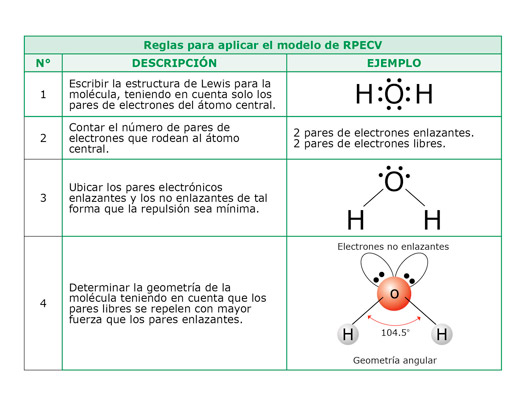Cuatro reglas básicas que se deben aplicar para predecir la geometría molecular de cualquier sustancia.
05.1.1Las geometrías moleculares básicas
Las geometrías moleculares se determinan calculando el número total de pares electrónicos enlazados y libres del átomo central de la molécula. Las geometrías más comunes son lineal, angular, trigonal, tetraédrica y piramidal.
Geometrías moleculares básicas GEOMETRÍA MOLECULAR NÚMERO DE PARES ELECTRÓNICOS ENLAZADOS NÚMERO DE PARES ELECTRÓNICOS LIBRES EJEMPLO Lineal 2 0 BeCl2 Angular 3 1 SO2 Trigonal 3 0 BF3 Tetraédrica 4 0 CH4 Piramidal 3 1 NH3 Recuerda
Para predecir teóricamente la geometría de una molécula se debe aplicar las estructuras de Lewis y el modelo de RPECV.
05.2Consolidación
Actividades para consolidar lo que has aprendido en esta sección.
-
06
La nomenclatura de compuestos inorgánicos
Open or CloseAsí como los seres humanos nos identificamos a través de un nombre y un apellido, esto les sucede a los compuestos inorgánicos, pero en ellos la nomenclatura no solo permite reconocerlos sino también determinar su fórmula química.
Existen tres formas estandarizadas de nombrar los compuestos:
- Sistemática o IUPAC (propuesta por la Unión Internacional de Química Pura y Aplicada).
- Stock.
- Tradicional.
Profundiza
06.1El número de oxidación
El número que representa la carga eléctrica que presentaría un átomo en una molécula o en un compuesto de carácter iónico, si se transfirieran completamente los electrones en el enlace, se denomina número de oxidación o estado de oxidación.
El estado de oxidación se asigna teniendo en cuenta que:
- En los elementos libres, como el H2, O2, Cl2, Fe, entre otros, equivale a cero (0).
- Para los iones monoatómicos (de un solo átomo), coincide con su carga, por ejemplo K+1 y F-1.
- En la mayoría de los compuestos el oxígeno presenta -2 como estado de oxidación, excepto en los peróxidos, donde es -1.
- El número de oxidación del hidrogeno es +1, excepto cuando forma hidruros, donde es -1.
- El flúor es el único halógeno que solo tiene -1 como número de oxidación para todos sus compuestos, los demás presentan este estado (-1) cuando están como iones halogenuros y diversas cargas positivas al combinarse con el oxígeno.
- La suma de los números de oxidación de un compuesto neutro debe ser cero (0).
- La suma de los estados de oxidación de un ion debe ser igual a la carga del ion.
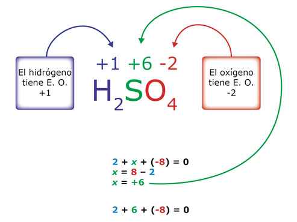El número de oxidación se ubica en la parte derecha superior del símbolo de los elementos como evidencia de la cantidad de electrones transferidos. Cuando el compuesto presenta tres átomos, el estado de oxidación del átomo central se determina a través de una operación algebraica, como se muestra en la imagen.
Estado de oxidación de los gases nobles
Los gases nobles, al presentar su octeto completo, no se combinan con ningún elemento, por ello el estado de oxidación es igual a cero.
Practica
06.2Las funciones y grupos funcionales inorgánicos
Los compuestos inorgánicos se agrupan en familias o funciones químicas teniendo en cuenta el comportamiento y la presencia de ciertos átomos, los cuales representan la parte activa del compuesto y les dan propiedades similares. Las agrupaciones de átomos representativos de cada función química se consideran grupos funcionales.
Compuestos inorgánicos FUNCIÓN QUÍMICA GRUPO FUNCIONAL Óxido O-2 Hidróxido (OH)-1 Ácido H+1 Sales Iones Hidruros H-1 Practica
06.3La nomenclatura de los óxidos
Los óxidos se forman por la reacción de los elementos con el oxígeno. Si el elemento es un metal, el óxido formado es de carácter básico, y si el que reacciona es un elemento no metálico, el óxido es de carácter ácido. Para nombrar los óxidos se tiene en cuenta el estado de oxidación del elemento que acompaña al oxígeno.
Normas para nombrar óxidos NOMENCLATURA DESCRIPCIÓN EJEMPLO Sistemática Prefijos
1: mono-
2: di-
3: tri-
4: tetra-
etc.Se utiliza el prefijo según el número de átomos de oxígeno, seguido de la palabra "óxido", la preposición "de" y el elemento. CO2
Dióxido de carbonoStock Se escribe la palabra "óxido" seguida de la proposición "de", el nombre del elemento y, entre paréntesis, el estado de oxidación en números romanos. CO2
Óxido de carbono (IV)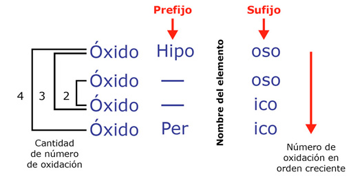En la nomenclatura tradicional se tiene en cuenta los estados de oxidación que presentan los elementos. Cuando solo tienen uno, se nombran como óxidos del elemento u óxidos del elemento terminado en "ico". Así, para el NaO, queda: óxido de sodio u óxido sódico. Si presentan entre dos y cuatro estados de oxidación, se utilizan los sufijos "ico" y "oso" y los prefijos "hipo" y "per" para diferenciar los estados mínimo y máximo, respectivamente.
Por ejemplo, para nombrar el Cl2O7 de acuerdo con la nomenclatura tradicional, se realiza lo siguiente:
- Se determina el estado de oxidación del Cl, que en este caso es +7.
- Se compara el estado de oxidación del compuesto con los que reporta el Cl en la tabla periódica. Al realizar esto encontramos que presenta cuatro estados de oxidación: Cl +1,+3,+5,+7, y que en el Cl2O7 se encuentra con el máximo.
- Se usan los datos de la ilustración para nombrarlo. Así se observa que se debe ubicar la palabra óxido seguida del nombre del elemento, el cual tiene como prefijo per- y como sufijo -ico. Así, el nombre del compuesto es óxido perclórico.
06.4La nomenclatura de los hidróxidos
Los hidróxidos también se conocen como bases, debido a que el grupo hidroxilo (OH)-1 les imprime un carácter básico a estas sustancias. Los hidróxidos se producen por la reacción de un óxido metálico al entrar en contacto con el agua.
La nomenclatura de las bases sigue los mismos principios que la de los óxidos, pero cambiando la palabra óxido por hidróxido. Por ejemplo, el Fe(OH)3 se puede nombrar así:
- Sistemática: Trihidróxido de hierro.
- Stock: Hidróxido de hierro (III).
- Tradicional: Hidróxido férrico.
El hidróxido de aluminio, componente de la Milanta, presenta propiedades antiácidas, por lo que se usa en el tratamiento de gastritis y de úlceras producidas por el exceso de jugo gástrico.
Practica
06.5La nomenclatura de los ácidos
Los ácidos se clasifican en oxácidos, formados por la reacción de un óxido ácido y el agua, e hidrácidos, generados a partir de la combinación del hidrógeno con los halógenos (con estado de oxidación -1) o con el azufre, el telurio y el selenio (con estado de oxidación de -2).
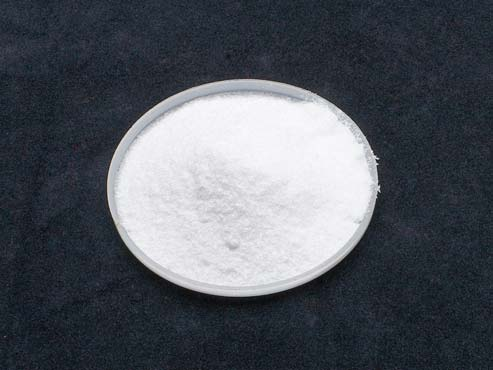El ácido bórico es un compuesto que generalmente se usa como insecticida, especialmente para eliminar cucarachas. En cantidades pequeñas, actúa como antiséptico contra bacterias y hongos causantes del mal olor en los pies.
Para nombrar los oxácidos se utiliza la nomenclatura tradicional, según las pautas de los óxidos, pero cambiando la palabra "óxido" por "ácido". Por ejemplo, en el H3PO4, el fósforo tiene estado de oxidación +5 y en la tabla periódica reporta 3 estados de oxidación positivos: +3, +4 y +5; por ende, el nombre que le corresponde al estar con el número máximo de oxidación es ácido fosfórico.
Por su parte, los hidrácidos en disolución acuosa se nombran anteponiendo la palabra "ácido" seguida del nombre del elemento terminado en "hídrico". Así el HCl se nombra como ácido clorhídrico.
Otros nombres de los hidrácidos
Cuando los hidrácidos se encuentran en estado gaseoso se escribe el anión terminado en "uro", seguido de las palabras "de hidrógeno"; por ejemplo, el HCl gaseoso se llama cloruro de hidrógeno.
06.6La nomenclatura de las sales
Cuando se combina un hidróxido con un ácido, el resultado es una sal, y como producto secundario se obtiene agua. En la nomenclatura de las sales se nombra primero el anión que proviene del ácido y luego el catión que se origina del hidróxido.
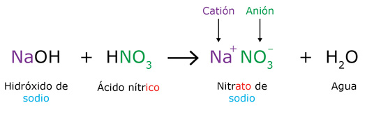En las oxisales, producto de la combinación de un oxácido y un hidróxido, se cambian las terminaciones del ácido, así: "oso" por "ito" e "ico" por "ato".
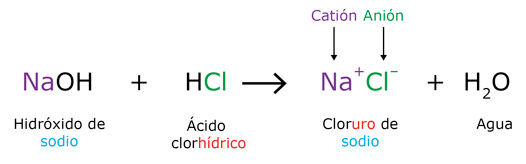En las sales haloideas, derivadas de un hidrácido, se cambia la terminación "hídrico" del ácido por "uro".
Recuerda
Los cationes son iones con carga positiva y los aniones son iones con carga negativa.
En cuanto a la nomenclatura de las sales ácidas y básicas, se inicia con el anión, seguido de la palabra "ácido" o "básico", según corresponda, y luego se incluye la preposición "de" y el nombre del catión. Por ejemplo, NaHCO3 se llama carbonato ácido de sodio y Zn (OH)F se conoce como fluoruro básico de zinc, que también se puede llamar hidroxifluoruro de zinc.
Practica
06.7La nomenclatura de los hidruros
Los hidruros se forman cuando los metales alcalinos (grupo 1) y alcalinotérreos (grupo 2) reaccionan con el hidrógeno. Para nombrarlos se inicia con la palabra "hidruro", luego "de" y finalmente el nombre del metal. Por ejemplo, el NaH se llama hidruro de sodio.
Recuerda
En los hidruros el estado de oxidación del hidrógeno es -1.
06.8Consolidación
Actividades para consolidar lo que has aprendido en esta sección.
-
07
Competencias
Open or ClosePon a prueba tus capacidades y aplica lo aprendido con estos recursos.
-
Fin de unidad:
Open or Close
repaso